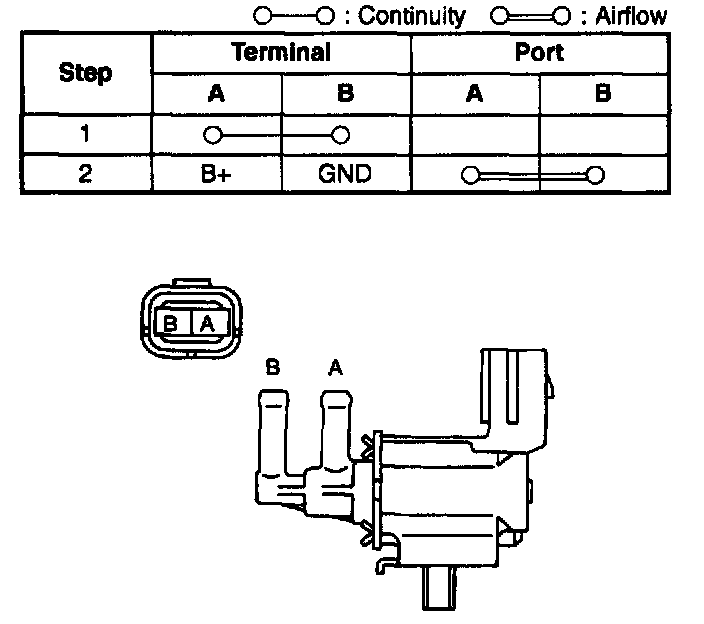
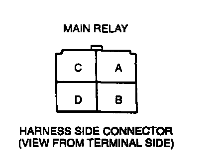

Purge Solenoid Valve Inspection
PURGE SOLENOID VALVE INSPECTIONSimulation Test
1. Carry out the "Purge Control Inspection".

2. If not as specified, perform the further inspection for the purge solenoid valve.
Airflow Inspection
NOTE:
- Perform the following test only when directed.
1. Remove the purge solenoid valve.
2. Inspect airflow between the ports under the following conditions.
3. If not as specified, replace the purge solenoid valve. If as specified but the Simulation Test is failed, inspect following:
Vacuum hose improper routing, kinks or leakage.
Open circuit
- Ground circuit (purge solenoid valve connector terminal B and PCM connector terminal 3L through common connector)

- Power circuit (purge solenoid valve connector terminal A and main relay connector terminal ID through common connector)
Short circuit
- Purge solenoid valve connector terminal B and PCM connector terminal 3L to ground